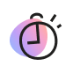
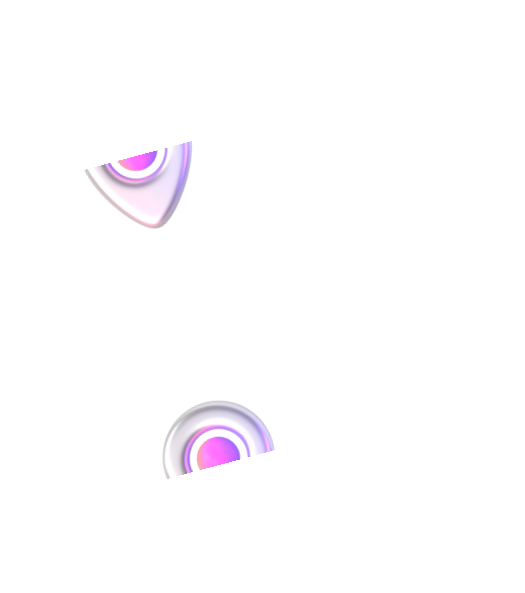

Вот что даёт участие в клубе

0₽ за старт в каждой поездке

Катаетесь с друзьями? Бронируйте до трёх самокатов
с аккаунта с абонементом —
так у всех будет бесплатный старт
с аккаунта с абонементом —
так у всех будет бесплатный старт

Бесплатная пауза 15 минут
в поездке — например, чтобы зайти за кофе или передохнуть
в поездке — например, чтобы зайти за кофе или передохнуть

Если самокат недостаточно заряжен или с ним неудобно переходить дорогу, замените
по пути на другой — это бесплатно
по пути на другой — это бесплатно
Эксклюзивный доступ к событиям Самокатов
С абонементом — у вас доступ
к специальным мероприятиям,
скидки и классный мерч. В 2023
году мы танцевали на Даче Плюс
с Антохой MC, катались на самокатах
с Сергеем Мезенцевым и
слушали хор Attaque de Panique



Купить абонемент
и вступить
в клуб смогут те, кто в Плюсе
За каждую поездку на самокатах такие пользователи получают кешбэк баллами. Баллы можно
тратить на поездки на самокатах
и такси с Яндекс Go, покупки
и заказы в других
сервисах
Яндекса